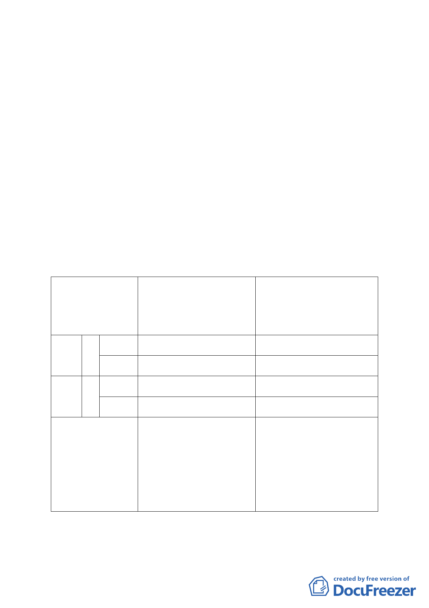

（一）建物存記機制
依本計畫辦理窳陋建物拆除及綠美化工程者，可向市
府申請建物存記，並經市府審核通過後，核發「合法建物
及既存違建存記證明」，以保障未來更新開發之權益；另
基地無法於本計畫規定期程完成綠美化工程者，市府得予
撤銷其「合法建物及既存違建存記證明」。
（二）容積獎勵
1.為鼓勵本計畫範圍內基地騰空綠美化，給予騰空期程及
美化容積獎勵。並依綠美化方案及基地區位給予不同比
例之奬勵額度(詳表3)。
2.美化容積獎勵計算公式
美化獎勵總樓地板面積（平方公尺）＝【累計實施空地維護管理
環境改善成本合計之總投入經費（元）×獎勵係數×地區發展係數】
／【1.4×本市各空地之土地公告現值（元/平方公尺）】。
表3 容積獎勵額度
方案
自行拆除
自行拆除
自行設置臨時平面停車場
自行美化
(含自行車場)或簡易運動
獎勵內容
自行維護
設施
自行維護
策略
容 騰空期
積 程獎勵
地區 獎 美化容
勵 積獎勵
基準容積5%
不得超過基準容積5%
基準容積2%
不得超過基準容積2%
非策 容 騰空期
略地 積 程獎勵
區
獎 美化容
勵 積獎勵
基準容積3%
不得超過基準容積5%
基準容積1%
不得超過基準容積2%
附帶規定
1.綠覆率應達70%以上
1.綠覆率應達40%以上
2.基地應於綠美化構想經本府 2.基地應於綠美化構想經本府審
審議通過後，5個月內完成綠 議通過後，6個月內完成綠美化
美化工程。
工程。
3.綠美化完工後維護管理應達 3.綠美化完工後維護管理應達18
18個月以上。
個月以上。
4.基地未依前述規定期限完工 4.基地未依前述規定期限完工或
或管理維護者，則不得適用 管理維護者，則不得適用本案
本案容積獎勵，該部分之容 容積獎勵，該部分之容積應予
積應予撤銷。
撤銷。
註1：綠覆率依「臺北市建築物及法定空地綠化實施要點」規定。
註2：美化容積獎勵計算方式依「臺北市建築空地管理維護辦法」規定，其中獎勵係數
以該辦法依實施改善及管理維護期程所定之獎勵係數2 倍計算。
3.適用容積獎勵之附帶規定
-6-